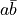
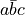
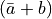
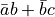
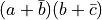

積和形論理式に関する処理¶
積和形論理式とは積項の論理和の形で表された論理式である． lctools では積和形論理式を表すために Cube と Cover というクラスを用いている．
積項(Cube)¶
積和形論理式の積項を表すためのクラス． 意味的には Bool3 の入力数分のリストである． 対応する位置の値が Bool3._0 の場合， その変数の否定のリテラルが含まれている． 一方， Bool3._1 の場合， その変数の工程のリテラルが含まれている． Bool3._d の場合，その変数は含まれない． このような積項の表し方を Positional Cube Notation と呼ぶ．
Cube の生成¶
Cube の生成時に与えることのできる引数は以下の３種類である． * int: 入力数を指定する．内容はすべてドントケアとなる． * Bool3 のリスト: 実際の内容を指定する． * 文字列: 個々の要素をBool3に変換する．
a ， b ， c の3つの変数からなる3次元のブール空間上の  というキューブ(積項)を生成するコードは以下のようになる．
from lctools import Cube
c = Cube('10-')
実際には Cube は変数名に関する情報は持たない． 変数のリテラルを用いた積項表現を出力する場合には別途変数名の辞書を与える必要がある．
以下の2つのキューブは同じ内容となる．
from lctools import Cube
c1 = Cube(4)
c2 = Cube('----')
生成関数と同様の操作を行なう関数 lctools.toCube() が用意されている．
from lctools import toCube
c1 = toCube(4) # c1 = '----'
c2 = toCube('101') # c2 = '101'
c3 = toCube([Bool3._d, bool3._0, bool3._d]) # c3 = '-0-'
この関数は後述の Cube を対象とした演算に Cube 以外のオブジェクトが 与えれた場合の変換関数としても用いられる．
Cube の内容に対するアクセス¶
Cube は生成したあとでも内容を変更することが可能である． そのための関数を以下に示す．
関数 |
説明 |
|---|---|
set_posiliteral(pos) |
pos番目の変数の肯定のリテラルを加える． |
set_negaliteral(pos) |
pos番目の変数の否定のリテラルを加える． |
clr_literal(pos) |
pos番目の変数のリテラルを取り除く． |
これらの関数は対象の変数に関する従来の設定を上書きする．
from lctools import Cube
c = Cube('1-0')
でキューブを生成した場合，このキューブは0番目の変数の肯定のリテラルと 2番目の変数の否定のリテラルを持つ． これに対して，
c.set_negaliteral(0)
を実行した場合，もともとの内容は上書きされて， 0番目の変数の否定のリテラルを持つようになる． 0番目の変数の肯定のリテラルは削除される． つまり，同じ変数の肯定と否定のリテラルを同時に持つことはできない．
Cube の要素に対するアクセスを配列(リスト)のように行なうことも可能である． この場合， Cube はあたかも Bool3 の配列であるかのように振る舞う．
from lctools import Cube, Bool3
c = Cube('01-')
v1 = c[1] # v1 == Bool3._1
c[2] = Bool3._0
n = len(c) # n == 3
このように Cube はミュータブルオブジェクトなので， 一つのオブジェクトを複数の変数が参照している場合に思わぬバグ の原因となる場合があるので注意すること．
from lctools import Cube, Bool3
c1 = Cube('1010')
c2 = c1
c2[0] = Bool3._d
# c1 は '1010' ではなく '-010' になっている
その他，キューブの諸元を取得する関数として以下のものがある．
関数 |
説明 |
|---|---|
input_num |
入力変数の数 @property |
literal_num |
リテラル数 @property |
リテラル数とは値が Bool3._d 以外の変数の数である．
包含関係のチェック¶
積項  は他の積項 に包含されている，と言う． この包含関係を調べる関数が contain() である．
from lctools import Cube
c1 = Cube('101')
c2 = Cube('1-1')
if c2.contain(c1):
print('c2 contains c1')
特殊な演算¶
後述する主項の導出のために特殊な演算を定義している． ただし，見かけは論理演算のOR演算の様に見せかけている．
from lctools import Cube
c1 = Cube('10-')
c2 = Cube((11-')
d = c1 | c2
# d は '1--' となる．
この例の様にただ一つの変数に関するリテラルのみが相異なる2つのキューブ のOR演算を行なうと結果もキューブとなる． Cube のOR演算(|)はこのように結果がキューブとなる場合のみ 結果の Cube を生成しそれを返す． それ以外の場合には None を返す．
比較演算¶
内容を Bool3 のリストと見なして辞書式順序で比較を行なう比較演算を定義している． Cube における大小比較は積項の包含関係とは無関係であることに注意． 等価比較およびハッシュ関数も定義しているので dict のキーとして用いることも可能である．
内容の出力¶
積項を表す論理式をLaTeX形式で出力するには以下のコードのように行なう． この時，名前付きオプション引数 var_map に変数番号をキーにして 変数名を納めた辞書を与えることで，変数名を指定することができる．
from lctools import Cube
c = Cube('10-')
s = c.latex_str(var_map={0: 'a', 1: 'b', 2: 'c'})
結果として得られる s の内容をLaTeXで処理すると のような出力が得られる．
特殊な用途で DeMorgan の法則を用いた否定形の積和形論理式を作るには以下 のようにする．
from lctools import Cube
c = Cube('10-')
s = c.DeMorgan_latex_str(var_map={0: 'a', 1: 'b', 2: 'c'})
結果として  が得られる．
積和形論理式(Cover)¶
ここでは慣例に従って積和形論理式を表す用語として Cover を用いる． 積和形論理式は積項の論理和であるが， このクラスでは Cube のリストという形で積和形論理式を表している． Cover の生成時に Cube のリストを引数として渡すことで内容を初期化することができる． 要素の Cube はメソッド add_cube(cube) で追加することもできる．
内容の出力¶
内容をLaTeX形式で出力するには以下のように latex_str() を用いる．
from lctools import Cube, Cover
c1 = Cube('01-')
c2 = Cube('-01')
f = Cover([c1, c2])
s = f.latex_str(var_map={0: 'a', 1: 'b', 2: 'c'})
結果は  のようになる．
特殊な用途で DeMorgan の法則を用いた否定形の和積形論理式を作るには以下 のようにする．
from lctools import Cube, Cover
c1 = Cube('01-')
c2 = Cube('-01')
f = Cover([c1, c2])
s = f.DeMorgan_latex_str(var_map={0: 'a', 1: 'b', 2: 'c'})
結果は  のようになる．